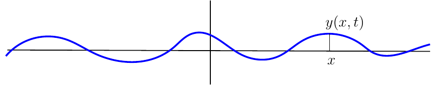
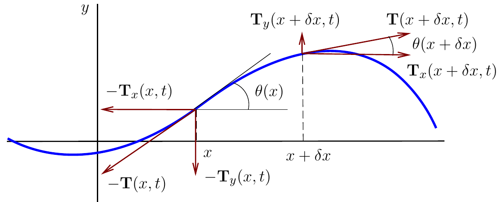

1 Deriving the wave equation for a string
You find content related to this lecture in the textbooks:
- Knobel (1999) chapter 7
- Coulson and Jeffrey (1977) sections 17 and 19
- Baldock and Bridgeman (1983) section 1.10.3
- Simmons (1972) section 40
1.1 Why waves on a string?
The great diversity of waves in nature means that we need to choose some concrete wave phenomenon to concentrate on to start our investigation. In this module we will concentrate on the waves on a string (think of a guitar string) and generalise to waves on a membrane (think of the membrane of a drum). By studying this in detail you will develop the intuition and the skills that will allow you to understand other wave phenomena later. We’ll come back to waves at the end of the part on Fluid Dynamics when we study waves on the surface of a fluid.
Personally I like studying vibrating strings because they are at the foundation of superstring theory. This is a “Theory of Everything” that posits that elementary particles are actually tiny strings, with different vibrational states corresponding to different elementary particles. As a Ph.D. student I showed how, if these strings move in certain higher-dimensional group supermanifolds, they behave like the elementary particles of our standard model of particle physics, including the chiral fermions. If we ignore the bit about group supermanifolds for the moment, the maths behind string theory is no more complicated than the maths we will discuss in this module and the partner module on quantum mechanics.
We consider a flexible, elastic string of linear density \(\rho\) (mass per unit length), which undergoes small transverse vibrations. (For example, it can be a guitar string.) The transverse vibrations mean that the displacements of each small element of the string is perpendicular to its length. We assume that the string does not move longitudinally (i.e. parallel to its length). Let \(y(x, t)\) be its displacement from equilibrium position at time \(t\) and position \(x\) (see Fig. Figure 1.1).

The string is sufficiently simple, that we can understand it by pure thought. We will derive from first principles a PDE that describes its motion (the wave equation) and then solve it for various initial conditions. I find it amazing that this is possible.
To derive the equation of motion of the string we first need to discuss the force acting on it which we will do in the next section. Then in the section after that we can plug this into Newton’s second law and out pops the wave equation.
1.2 Linearized tension force
We consider a small segment of the string between any two points \(x\) and at \(x+\delta x\) as shown in Fig. Figure 1.2. We want to determine the force that is acting on this segment, so that we can later determine its motion using Newton’s second law. We will concentrate on only the tension force of the string and ignore less important effects like gravity, friction, or stiffness.
We assume that the tension force \(\boldsymbol{T}(x)\) has constant magnitude throughout the string: \(|\boldsymbol{T}(x)|=T\). However its direction varies along the string, because it always acts in the tangential direction. At interior points the tension force pulling to one side will balance that pulling in the other direction. The net tension force on the segment will thus be determined by the tension forces at its ends. We have drawn these forces schematically in Figure Figure 1.2 where we have also split them into their \(x\) and \(y\) components.

The total force acting on the segment is \[\boldsymbol{F} = \boldsymbol{T}(x+\delta x)-\boldsymbol{T}(x). \tag{1.1}\] We first consider the \(y\) component \[T_y(x) = T\sin\theta(x), \tag{1.2}\] where \(\theta(x)\) is the angle that the string makes with the horizontal at \(x\). The slope of the string at \(x\) is \[\frac{\partial y}{\partial x} = \tan\theta(x). \tag{1.3}\] We are now going to simplify the expressions by assuming that the slope and thus \(\theta\) is small, \(\theta<<1\). Then, by Taylor expansion, \[\sin\theta = \theta + O(\theta^3), ~~~\tan\theta = \theta + O(\theta^2). \tag{1.4}\] We ignore all terms that are higher order in \(\theta\). This is known as the linear approximation. It is done very often, because it leads to linear equations that are so much easier to solve. So \[\begin{split} F_y&=T_y(x+\delta x) - T_y(x) \\ &= T\sin\theta(x+\delta x) -T\sin\theta(x)\\ &\approx T\left(\theta(x+\delta x)-\theta(x)\right). \end{split} \tag{1.5}\] We do another Taylor expansion and ignore higher-order terms in \(\delta x\), which is fine because we want to look at only an infinitesimally small segment of string. \[\begin{split}\theta(x+\delta x)&=\theta(x)+\delta x\frac{\partial\theta}{\partial x}+O(\delta x)^2\\ &\approx \theta(x)+\delta x\frac{\partial\theta}{\partial x}.\end{split} \tag{1.6}\] Substituting this into Eq. 1.5 gives \[F_y\approx T \delta x\frac{\partial\theta}{\partial x}. \tag{1.7}\] We would like to express this in terms of \(y\) instead of \(\theta\), which we can do by observing that \[\theta\approx\tan\theta=\frac{\partial y}{\partial x}, \tag{1.8}\] so we finally have \[F_y\approx T\,\delta x\,\frac{\partial^2 y}{\partial x^2}. \tag{1.9}\]
We deal with the \(x\) component of the force similarly, using the Taylor expansion of \(\cos\theta=1+O(\theta^2)\): \[\begin{split}F_x&=T_x(x+\delta x)-T_x(x)\\ &=T\cos\theta(x+\delta x)-T\cos\theta(x)\\ &\approx T-T=0.\end{split} \tag{1.10}\] So in our approximation of small slope, there is no movement in the \(x\) direction. The string vibrates purely transversally.
1.3 Wave equation from Newton’s 2nd law
To determine the motion in the \(y\) direction we use Newton’s second law \[m a_y = F_y, \tag{1.11}\] where \(a_y\) is the acceleration in the \(y\) direction, \[a_y=\frac{\partial^2 y}{\partial t^2} \tag{1.12}\] and \(m\) is the mass of the infinitesimal segment which is obtained as the density times the length, \[m=\rho \delta x. \tag{1.13}\] We assume that density \(\rho\) is constant along the string. Plugging this together with our expression for \(F_y\) into Newton’s second law gives \[\rho\delta x\frac{\partial^2 y}{\partial t^2}=T\delta x\frac{\partial^2 y}{\partial x^2}. \tag{1.14}\] We can cancel the \(\delta x\) and divide by \(\rho\) which finally gives us the wave equation \[\frac{\partial^2 y}{\partial t^2}=c^2\frac{\partial^2 y}{\partial x^2} \tag{1.15}\] with wave speed \[c=\sqrt{\frac{T}{\rho}}. \tag{1.16}\] Why we call the constant \(c\) the wave speed will become clear in the next lecture.
1.4 Checking dimensions
After having derived an equation, it is always wise to check that its dimensions work out correctly.
We use square brackets to denote the dimension of a quantity. So \([y]=L\) says that \(y\) has dimension of length, \([m]=M\) says that \(m\) has dimension of mass, and \([t]=T\) says that \(t\) has dimension of time. 1 The dimension of both sides of an equation has to agree, so \[\left[\frac{\partial^2 y}{\partial t^2}\right]=\frac{L}{T^2}=[c^2]\left[\frac{\partial^2 y}{\partial x^2}\right]=[c^2]\frac{1}{L}. \tag{1.17}\] This shows that \([c]=L/T\), so it has the dimension of a velocity. Because \(T\) is a force we have \([T]=ML/T^2\). The density \(\rho\) has \([\rho]=M/L\). So \[[c]=\left[\sqrt{\frac{T}{\rho}}\right]=\sqrt{\frac{ML/T^2}{M/L}}=\sqrt{\frac{L^2}{T^2}}=\frac{L}{T}. \tag{1.18}\] This completes our check of the dimensions.
1 Note the conflict of notation where we used \(T\) for the tension force while it is also the conventional symbol for the dimension of time. Such conflicts happen from time to time – the context determines the meaning of the symbol.